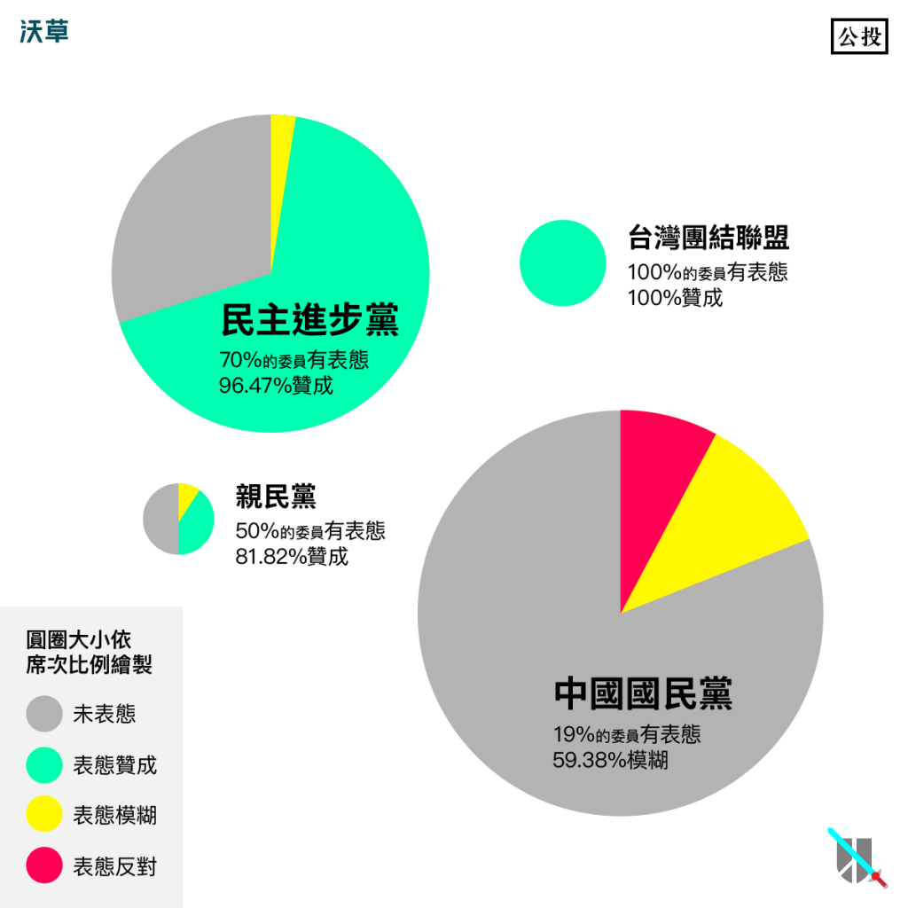
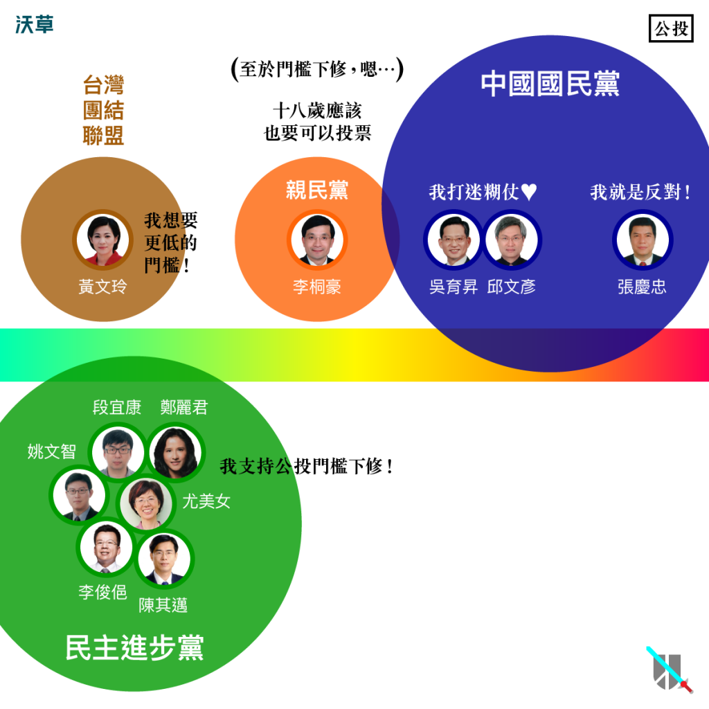
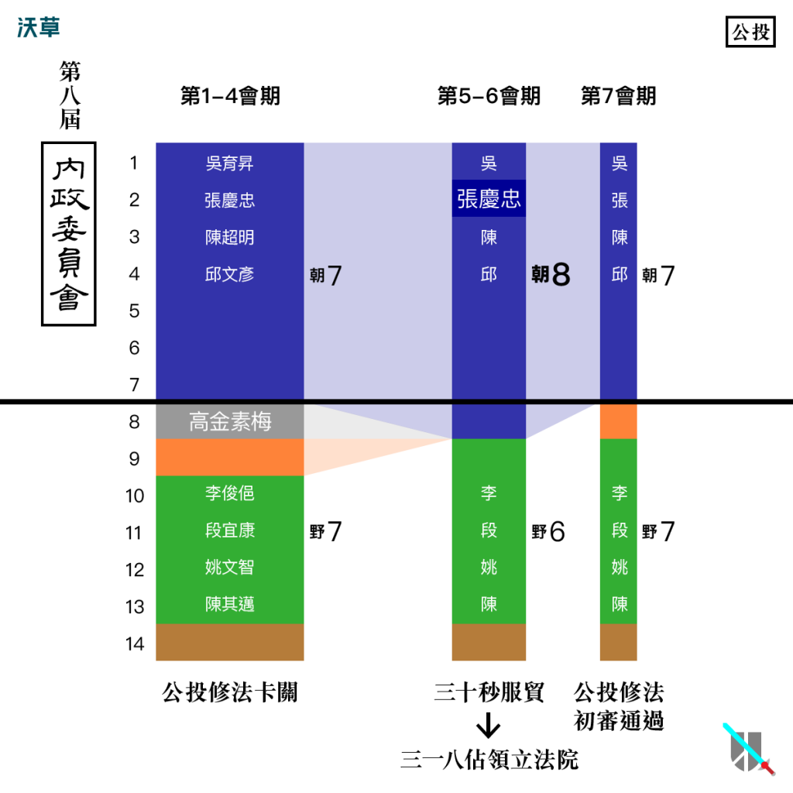

當政客背棄了民意，屬於人民的「鳥籠公投」何時了？
文：王希（沃草｜立委出任務 專案經理）
公民投票是人民直接行使權利的方式，向來被認為是民主國家的重要制度。台灣在2004年立法通過後，成為東亞第一個採行公投制度的國家。
每當有社會重大爭議時，不管朝野藍綠，都曾經提出以公投解決問題的想法，如軍購案公投、入聯公投、ECFA公投、核四公投等等，但全國公投從來沒有一次真正成功通過。不少人都指出問題在於高門檻，也因此有「鳥籠公投」的批評。
然而，立法院的修法進度仍然卡住，本屆立院已幾乎沒有機會通過（點這裡看更多）。
就讓阿草用數據告訴你：在立法院內怎麼討論這個議題？修法為何卡住？如何從公投表態選擇新國會的立委？
不只是藍綠對決，其實是朝野政黨大亂鬥
大家常常會以為立法院是藍綠對決，但在公投法的討論上，實際上是朝野政黨的大亂鬥。圖表顯示有表態紀錄的立委總共51人，包含：
朝：國民黨13人
野：民進黨30人+台聯6人+親民黨2人
我們發現，在野黨非常關心這個議題，民進黨表態立委超過四分之三，其他兩個小黨台聯和親民黨的立委則全部參戰。更特別的是，這些在野黨立委全部都偏向贊成公投門檻下修的立場，國民黨立委則是落在模糊和反對的立場，朝野雙方壁壘分明。
註：台聯慣例為「一席立委兩人輪替」，每人各擔任兩年，故台聯共3席立委有6人擔任過立委
另外統計發言次數，各黨分別是國民黨32次、民進黨43次、親民黨7次、台聯7次，雖然以席次的比例來看，國民黨的次數仍然偏少，但是差異並非十分懸殊，不過在野黨則都非常踴躍發言。

Photo Credit: 沃草
為什麼在野黨特別關心公投法這個議題？這可能是因為公投制度具有彌補代議政治不足的目的。
在代議制度下，立法院有時可能會制定出違反部分人民意志的法律或政策，而這時少數黨立委因為人數劣勢而不一定能在立法院中阻止通過，這時如果有完善的公投制度，就能透過全民作最終決定來避免這樣的問題。
在代議制度下，立法院有時可能會制定出違反部分人民意志的法律或政策，而這時少數黨立委因為人數劣勢而不一定能在立法院中阻止通過，這時如果有完善的公投制度，就能透過全民作最終決定來避免這樣的問題。
國民黨模糊反對分不清，在野黨修法內容很分歧
贊成｜民進黨：陳其邁（7）、段宜康（7）、姚文智（7）、尤美女（7）、李俊俋（7）、鄭麗君（7）
贊成｜親民黨：李桐豪（5）
模糊｜國民黨：吳育昇（6）、邱文彥（5）
反對｜國民黨：張慶忠（5）
註：括號內代表表態次數

Photo Credit: 沃草
以上這些可說是特別關心這個議題的立委，他們的表態次數合計60次，幾乎佔全部139次的一半。
進一步分析他們各自的表態內容，我們發現兩個特點：
（一）國民黨的發言偏向模糊，僅有少數明確的反對表態
國民黨大多數立委並不會直接表明反對公投門檻下修，而是提出「我贊成調降，但是要再多討論⋯」「門檻還是有他的意義⋯」「要有嚴謹配套措施⋯」等等曖昧不明的用詞。
這種特有的說話技巧，讓人捉摸不清真實態度，這種類型的立委以吳育昇為代表人物。少數像張慶忠這類的立委則是完全不同，非常直率的表達出他對「高門檻」的堅持。
由於國民黨立委模糊和反對的意見交雜，很難具體看出國民黨的「黨意」到底是什麼。
由於立法院開會時間有限，每個法案能被排案討論的機會都十分寶貴，模糊的發言常常導致會議時間延宕無結論、行政機關藉此得以「再討論研議」為由拖延進度，因此阻礙了修法實質上的討論，也無助於凝聚社會共識。
（二）在野黨雖都偏向贊成，但是關注角度並不同
偏向贊成的在野黨，彼此也有很大的分歧。民進黨和台聯修法意見比較接近，但是台聯要求更低的門檻。
另一方面，親民黨則特別著重在「年齡下降到18歲」，對於「降低提案、連署、投票門檻」的問題，則是在民進黨和國民黨之間擺盪，這點似乎也和社會大眾普遍對親民黨的理解相同。
整體來說，在野黨修法內容和程度的分歧，是導致修法過程需要較多時間討論的可能原因。
修法關鍵在於席次分布，改革能否期待新國會？
從2012年，第八屆立委剛上任時開始，就有許多公投法的修法草案陸續提出，但在內政委員會的審查過程並不順利，一直到2015年4月（立法院第八屆立委第七會期）才順利初審通過，送入二讀協商討論中。
延宕兩年多，其中的原因是什麼？我們分析了這七個會期中內政委員會的席次分布，發現以下狀況：

Photo Credit: 沃草
第一到四會期（2012─2013）
朝：7人
野：6人─民進黨4、台聯1、親民黨1
無黨團結聯盟：1人
註：第一到四會期的無黨團結聯盟立委為高金素梅
野：6人─民進黨4、台聯1、親民黨1
無黨團結聯盟：1人
第五到六會期（2014）
朝：8人
野：6人─民進黨5、台聯1
註：第五到六會期立法院爆發服貿爭議
野：6人─民進黨5、台聯1
第七會期（2015）
朝：7人
野：7人─民進黨5、台聯1、親民黨1
可以發現第七會期最大的不同，是民進黨、台聯、親民黨合計7席，是歷來最多。
野：7人─民進黨5、台聯1、親民黨1
在野黨立委按照分工，一人擔任召委排案當主席，還有6席可以進行表決；這時，只要在野黨全部團結，除非國民黨立委全部出席，否則表決的控制權就掌握在在野黨陣營這邊。
註：贊成反對數相同時，召委主席就可參與投票
在這樣的背景下，國民黨對法案及議事的控制力最弱。
2015年4月22日，公投法在內政委員會的審查，正是因為當天國民黨立委鄭天財Sra·Kacaw請假未出席，形成國民黨：在野黨席次比為6：7的局勢，最後國民黨立委集體退席，終於初審通過。
雖然還未正式修法通過，但這個例子說明法案在立法院委員會審查中，最關鍵的因素是委員會的席次分布。各黨立委如何運用席次的變化，進行結盟和合作，就是成功推動修法的關鍵。
在野黨立委普遍非常關心公投法，修法過程也出現了在野黨團結對抗國民黨的現象。但在野黨立委的修法內容和程度也有分歧，民進黨和台聯接近，親民黨雖然偏向贊成，但在民進黨和國民黨之間擺盪。
另一方面，國民黨立委大多數也不願明確表態，立場偏向模糊。這些表態紀錄正說明「公投門檻下修幾乎是共識，但修法進度卻十分緩慢」的結果。
然而，通過初審後的法案送入院會，此時國民黨的「黨意」不再模糊，而是明確地把法案拉下協商，至今仍無機會修法通過，只能寄望下一屆國會。
但是新國會能否期待？民進黨立委在選後，若成為執政黨，是否還會維持推動修法的態度？關鍵還是在於人民是否能夠依據這些表態紀錄，選出真正重視這個議題的新國會。
如果你有關心的議題，請選出真正關心這些議題的立委，才能推動改革。怎麼判斷哪些立委真正關心這些議題？答案是關注他們的表態紀錄。
文章獲沃草授權轉載，詳細表態內容請點入「沃草！立委出任務」
責任編輯：羊正鈺
核稿編輯：楊之瑜
核稿編輯：楊之瑜
SHARE：